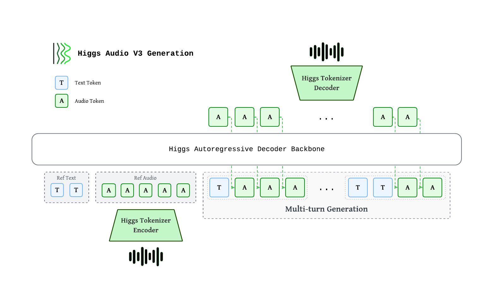

Higgs TTS#
Higgs Audio v3 TTS is a text-to-speech model from Boson AI. It generates 24 kHz speech and supports 100+ languages, voice cloning from a reference clip, and fine-grained inline control over emotion, style, sound effects, and prosody.

Higgs autoregressive decoder consumes interleaved text and audio tokens. Audio is encoded by the Higgs Tokenizer into 8 codebooks at 25 fps, staggered via a delay pattern, then mapped to backbone hidden states through a multi-codebook fused embedding. Output codes pass through a multi-codebook fused head, are de-delayed, and decoded back to waveform. Multi-turn generation interleaves <|text|>…<|audio|>… chunks so each new chunk is grounded on reference + prior chunks.
Component |
Spec |
|---|---|
Backbone |
~4B autoregressive decoder (36 L, hidden=2560, GQA 32/8) |
Multi-codebook embedding / head |
Fused single-tensor, tied with text embedding |
Context length |
8,192 tokens (training sequence length) |
Audio tokens |
8 codebooks × 1026 vocab, delay pattern |
Sample rate |
24 kHz |
Frame rate |
25 fps (40 ms / frame) |
Evaluation Benchmarks#
Multilingual Voice Clone#
We evaluate Higgs Audio v3 TTS on public multilingual TTS suites and our internal 111-language Higgs-Multilingual set, covering both common and lower-resource languages.
WER / CER (↓, %), macro-averaged across each benchmark’s language set. Higgs Audio v3 TTS results are reproducible with original metrics and normalization:
Benchmark |
Languages |
WER/CER ↓ |
|---|---|---|
Seed-TTS |
2 |
1.11 |
CV3 |
9 |
4.41 |
MiniMax-Multilingual |
23 |
2.74 |
Higgs-Multilingual |
111 |
3.61 |
Emergent TTS#
Win-rate (↑) per category on the Emergent TTS benchmark — judge preference vs a fixed baseline. Benchmark text is run verbatim (no inline control tags).
Category |
Win-rate ↑ |
|---|---|
Overall |
53.65% |
Emotions |
53.75% |
Foreign Words |
48.75% |
Paralinguistics |
68.57% |
Complex Pronunciation |
25.10% |
Questions |
61.43% |
Syntactic Complexity |
60.71% |
Prerequisites#
Install sglang-omni by following Installation, then download and serve the model:
hf download bosonai/higgs-audio-v3-tts-4b
sgl-omni serve \
--model-path bosonai/higgs-audio-v3-tts-4b \
--allowed-local-media-path docs/_static/audio \
--port 8000
The voice-cloning examples below use local reference clips from
docs/_static/audio.
Synthesizing Speech#
Zero-shot#
Use curl
curl -X POST http://localhost:8000/v1/audio/speech \
-H "Content-Type: application/json" \
-d '{
"model": "bosonai/higgs-audio-v3-tts-4b",
"voice": "default",
"input": "Hello, how are you?"
}' \
--output output.wav
Use Python
import requests
resp = requests.post(
"http://localhost:8000/v1/audio/speech",
json={
"model": "bosonai/higgs-audio-v3-tts-4b",
"voice": "default",
"input": "Hello, how are you?",
},
)
resp.raise_for_status()
with open("output.wav", "wb") as f:
f.write(resp.content)
Reference output:
Voice Cloning#
Supplying the reference transcript (text) materially improves cloning quality.
Use curl
curl -X POST http://localhost:8000/v1/audio/speech \
-H "Content-Type: application/json" \
-d '{
"model": "bosonai/higgs-audio-v3-tts-4b",
"voice": "default",
"input": "Have a nice day and enjoy south california sunshine.",
"references": [{
"audio_path": "docs/_static/audio/male-voice.wav",
"text": "Hey, Adam here. Let'\''s create something that feels real, sounds human, and connects every time."
}],
"temperature": 0.8,
"top_k": 50,
"max_new_tokens": 1024
}' \
--output output.wav
Use Python
import requests
resp = requests.post(
"http://localhost:8000/v1/audio/speech",
json={
"model": "bosonai/higgs-audio-v3-tts-4b",
"voice": "default",
"input": "Have a nice day and enjoy south california sunshine.",
"references": [{
"audio_path": "docs/_static/audio/male-voice.wav",
"text": "Hey, Adam here. Let's create something that feels real, sounds human, and connects every time.",
}],
"temperature": 0.8,
"top_k": 50,
"max_new_tokens": 1024,
},
)
resp.raise_for_status()
with open("output.wav", "wb") as f:
f.write(resp.content)
Reference input:
Reference output:
Streaming#
Unlike a standard request where you wait for the full audio to be generated before receiving anything, streaming lets you start receiving and playing audio while generation is still in progress. This significantly reduces time-to-first-audio, which matters for real-time or interactive use cases.
Higgs TTS implements streaming as raw PCM bytes. Your client can play or buffer each chunk as it arrives, rather than waiting for the full response.
Enable streaming by setting "stream": true and "response_format": "pcm" in
the request body. During generation, the vocoder emits incremental audio chunks.
The HTTP response returns audio/pcm bytes and exposes sample-rate metadata in
headers.
Use curl
Set "stream": true and "response_format": "pcm" in your request body:
curl -N -X POST http://localhost:8000/v1/audio/speech \
-H "Content-Type: application/json" \
-d '{
"model": "bosonai/higgs-audio-v3-tts-4b",
"voice": "default",
"input": "Get the trust fund to the bank early.",
"references": [{
"audio_path": "docs/_static/audio/male-voice.wav",
"text": "Hey, Adam here. Let'\''s create something that feels real, sounds human, and connects every time."
}],
"stream": true,
"response_format": "pcm"
}' \
--output output.pcm
The -N flag disables curl’s output buffering so chunks are written as they arrive.
Streaming returns audio/pcm 16-bit mono PCM bytes. It has no in-band JSON
events, final usage event, or terminal sentinel. The response headers report the
actual stream sample rate, channel count, and bit depth. Higgs defaults
initial_codec_chunk_frames to 20; with eight codebooks, the AR producer
flushes the corresponding delayed-code rows at row 27. Clients can still set
another value, including 0 to use the steady chunk size from the start. The
producer and vocoder share the effective value, and it controls only the first
chunk. Follow-up chunks return to the normal Higgs streaming window.
Use Python
This example writes streamed PCM bytes to a WAV file. In a real application, you
would pipe the chunks directly to an audio player (e.g., via pyaudio or
sounddevice).
import wave
import requests
REFERENCE_AUDIO = "docs/_static/audio/male-voice.wav"
REFERENCE_TEXT = "Hey, Adam here. Let's create something that feels real, sounds human, and connects every time."
SPEECH_INPUT = "Get the trust fund to the bank early."
with requests.post(
"http://localhost:8000/v1/audio/speech",
json={
"model": "bosonai/higgs-audio-v3-tts-4b",
"voice": "default",
"input": SPEECH_INPUT,
"references": [{"audio_path": REFERENCE_AUDIO, "text": REFERENCE_TEXT}],
"stream": True,
"response_format": "pcm",
},
stream=True,
) as resp:
resp.raise_for_status()
chunks = []
sample_rate = int(resp.headers.get("x-sample-rate", 24000))
for chunk in resp.iter_content(chunk_size=None):
if chunk:
chunks.append(chunk)
# In a real app: feed `chunk` to your audio player here
with wave.open("output_streaming.wav", "wb") as f:
f.setnchannels(1)
f.setsampwidth(2)
f.setframerate(sample_rate)
f.writeframes(b"".join(chunks))
Reference output:
Inline Control Tokens#
All tags follow <|category:value|> syntax and can be inserted mid-utterance.
Emotion —
elation,amusement,enthusiasm,determination,pride,contentment,affection,relief,contemplation,confusion,surprise,awe,longing,arousal,anger,fear,disgust,bitterness,sadness,shame,helplessnessStyle —
singing,shouting,whisperingSound effects —
cough,laughter,crying,screaming,burping,humming,sigh,sniff,sneezeProsody
Speed —
speed_very_slow(~0.65×),speed_slow(~0.85×),speed_fast(~1.2×),speed_very_fast(~1.4×)Pauses —
pause(~400–700 ms),long_pause(~700–1500 ms)Pitch —
pitch_low(~−3 st),pitch_high(~+2.5 st)Delivery —
expressive_high,expressive_low
Embed control tokens directly in the input field. Tokens from different
categories can be combined. Each request is a single turn, and two rules make control tokens reliable:
Lead the turn with the delivery tokens. Emotion (
<|emotion:…|>), Style (<|style:…|>), and the prosody speed (<|prosody:speed_…|>), pitch (<|prosody:pitch_…|>) and expressive (<|prosody:expressive_…|>) tokens set how the entire turn is delivered, so place them at the very start of theinput, before any text. Positional tokens are the exception:<|prosody:pause|>/<|prosody:long_pause|>go inline exactly where the break should fall, and each<|sfx:…|>goes right before the sound it triggers.Pair every sound effect with its onomatopoeia. A
<|sfx:…|>token lands best when the matching written sound follows it immediately (e.g.<|sfx:laughter|>Haha,<|sfx:sigh|>Uh,<|sfx:sneeze|>Achoo) — the onomatopoeia gives the model the acoustic cue to realize the effect.
Demo
Emotion: amusement + laughter
curl -X POST http://localhost:8000/v1/audio/speech \
-H "Content-Type: application/json" \
-d '{
"model": "bosonai/higgs-audio-v3-tts-4b",
"voice": "default",
"input": "<|emotion:amusement|><|prosody:expressive_high|>Wait, wait, that was kind of hilarious. <|sfx:laughter|>Hehe, no, seriously, I was not ready for that.",
"temperature": 0.8,
"top_k": 50,
"max_new_tokens": 1024
}' \
--output output.wav
Reference output:
Emotion: anger + shouting
curl -X POST http://localhost:8000/v1/audio/speech \
-H "Content-Type: application/json" \
-d '{
"model": "bosonai/higgs-audio-v3-tts-4b",
"voice": "default",
"input": "<|emotion:anger|><|style:shouting|>No, that is not okay! We cannot ship something that sounds broken, delayed, and unnatural.",
"temperature": 0.8,
"top_k": 50,
"max_new_tokens": 1024
}' \
--output output.wav
Reference output:
Emotion: sadness + sniff
curl -X POST http://localhost:8000/v1/audio/speech \
-H "Content-Type: application/json" \
-d '{
"model": "bosonai/higgs-audio-v3-tts-4b",
"voice": "default",
"input": "<|emotion:sadness|><|sfx:crying|>I... I’m sorry. <|sfx:sniff|>Sff, We really tried. after all those late nights, I thought the whole thing had failed.",
"references": [{
"audio_path": "docs/_static/audio/ref_voice.wav",
"text": "It was the night before my birthday. Hooray! It’s almost here! It may not be a holiday, but it’s the best day of the year."
}],
"temperature": 0.8,
"top_k": 50,
"max_new_tokens": 1024
}' \
--output output.wav
Reference output:
Emotion: confusion + humming + sigh
curl -X POST http://localhost:8000/v1/audio/speech \
-H "Content-Type: application/json" \
-d '{
"model": "bosonai/higgs-audio-v3-tts-4b",
"voice": "default",
"input": "<|emotion:confusion|><|sfx:humming|>Hmm... wait. <|sfx:sigh|>Uh, I’m not sure I understand. Do you mean the voice should speak faster, or the system should respond earlier?",
"references": [{
"audio_path": "docs/_static/audio/ref_voice.wav",
"text": "It was the night before my birthday. Hooray! It’s almost here! It may not be a holiday, but it’s the best day of the year."
}],
"temperature": 0.8,
"top_k": 50,
"max_new_tokens": 1024
}' \
--output output.wav
Reference output:
Emotion: surprise + screaming
curl -X POST http://localhost:8000/v1/audio/speech \
-H "Content-Type: application/json" \
-d '{
"model": "bosonai/higgs-audio-v3-tts-4b",
"voice": "default",
"input": "<|emotion:surprise|><|prosody:pitch_high|><|sfx:screaming|>Ah! Wait, I almost forgot! Higgs Audio v3 also supports over one hundred languages.",
"references": [{
"audio_path": "docs/_static/audio/ref_voice.wav",
"text": "It was the night before my birthday. Hooray! It’s almost here! It may not be a holiday, but it’s the best day of the year."
}],
"temperature": 0.8,
"top_k": 50,
"max_new_tokens": 1024
}' \
--output output.wav
Reference output:
Combine them together:
Here is an example of combining emotion, sound effects, and prosody tokens together — a short Gaokao-style English listening dialogue between two speakers:
Commands
Part 1 — she asks about the missed class:
curl -X POST http://localhost:8000/v1/audio/speech \
-H "Content-Type: application/json" \
-d '{
"model": "bosonai/higgs-audio-v3-tts-4b",
"voice": "default",
"input": "<|emotion:contemplation|>Hi David, I missed the biology class today because I caught a cold. <|sfx:cough|>Ahem! Sorry, Could you tell me what the teacher covered?",
"references": [{
"audio_path": "docs/_static/audio/female-voice.wav",
"text": "By repeating what students say, teachers can demonstrate that they are listening. By extending what students say."
}],
"temperature": 0.8,
"top_k": 50,
"max_new_tokens": 1024
}' \
--output part1.wav
Part 2 — he explains what was covered:
curl -X POST http://localhost:8000/v1/audio/speech \
-H "Content-Type: application/json" \
-d '{
"model": "bosonai/higgs-audio-v3-tts-4b",
"voice": "default",
"input": "<|emotion:enthusiasm|>Sure, no problem! We learned how plants make food through photosynthesis, and <|prosody:long_pause|> there will be a quiz this Friday.",
"references": [{
"audio_path": "docs/_static/audio/male-voice.wav",
"text": "Hey, Adam here. Let'\''s create something that feels real, sounds human, and connects every time."
}],
"temperature": 0.8,
"top_k": 50,
"max_new_tokens": 1024
}' \
--output part2.wav
Part 3 — she reads the result:
curl -X POST http://localhost:8000/v1/audio/speech \
-H "Content-Type: application/json" \
-d '{
"model": "bosonai/higgs-audio-v3-tts-4b",
"voice": "default",
"input": "<|emotion:relief|>Oh, that is really helpful. Thank you!",
"references": [{
"audio_path": "docs/_static/audio/female-voice.wav",
"text": "By repeating what students say, teachers can demonstrate that they are listening. By extending what students say."
}],
"temperature": 0.8,
"top_k": 50,
"max_new_tokens": 1024
}' \
--output part3.wav
Concatenate (~0.6 s gap between lines):
ffmpeg -y \
-i part1.wav -f lavfi -t 0.6 -i anullsrc=r=24000:cl=mono \
-i part2.wav -f lavfi -t 0.6 -i anullsrc=r=24000:cl=mono \
-i part3.wav \
-filter_complex "[0:a][1:a][2:a][3:a][4:a]concat=n=5:v=0:a=1" \
gaokao_listening.wav
Reference output:
Emotion#
Token |
Description |
|---|---|
|
Elation / joy |
|
Amusement / playful laughter |
|
Enthusiasm / excitement |
|
Determination / firmness |
|
Pride / confidence |
|
Calm satisfaction |
|
Warmth / affection |
|
Relief |
|
Thoughtful / reflective |
|
Confused |
|
Surprised |
|
Awe / wonder |
|
Longing / yearning |
|
Heightened desire |
|
Anger |
|
Fear |
|
Disgust |
|
Bitterness |
|
Sadness |
|
Shame |
|
Helplessness |
Style#
Token |
Description |
|---|---|
|
Singing |
|
Shouting / projected voice |
|
Whisper |
Sound Effects#
Pair each token with the matching onomatopoeia immediately after it.
Token |
Description |
Suggested onomatopoeia |
|---|---|---|
|
Cough |
Ahem |
|
Laughter |
Haha / Hehe |
|
Crying |
Boohoo / Sob |
|
Screaming |
Ahh / Aaah |
|
Burping |
Burp |
|
Humming |
Hmm / Mmm |
|
Sigh |
Uh / Ahh |
|
Sniff |
Sff |
|
Sneeze |
Achoo |
Prosody#
Token |
Effect |
|---|---|
|
~0.65× speed |
|
~0.85× speed |
|
~1.2× speed |
|
~1.4× speed |
|
~−3 semitones |
|
~+2.5 semitones |
|
~400–700 ms pause |
|
~700–1500 ms pause |
|
More expressive delivery |
|
Flatter delivery |
Request parameters#
Parameter |
Type |
Default |
Description |
|---|---|---|---|
|
string |
served model |
Served Higgs TTS model identifier |
|
string |
(required) |
Text to synthesize |
|
string |
|
Voice identifier |
|
string |
|
Output audio format ( |
|
bool |
|
Enable raw PCM streaming |
|
list |
|
Reference audio for voice cloning. Each item has |
|
string |
|
Shorthand for |
|
list[list[int]] |
|
Pre-encoded discrete codes, shape |
|
string |
|
Transcript of reference audio when supplying |
|
int |
|
Maximum number of generated multi-codebook steps |
|
float |
|
Sampling temperature |
|
float |
|
Top-p sampling |
|
int |
|
Top-k sampling |
|
int |
|
Random seed for reproducibility |
Performance#
Throughput on Seed-TTS EN (full set, N=1088 per run). Client --max-concurrency sweep against a Higgs server (max_running_requests=16, bf16, CUDA Graph on). Each row is the mean of 3 runs. Hardware: 1× H100.
Concurrency |
Throughput (req/s) |
Mean latency |
RTF (per-req) |
audio_s/s |
|---|---|---|---|---|
1 |
1.62 |
617 ms |
0.147 |
6.89 |
2 |
2.70 |
742 ms |
0.180 |
11.37 |
4 |
5.45 |
733 ms |
0.177 |
22.84 |
8 |
8.91 |
898 ms |
0.217 |
37.38 |
16 |
14.74 |
1079 ms |
0.262 |
61.84 |
Concurrency — Maximum number of in-flight client requests (
--max-concurrency).Throughput (req/s) — Completed requests divided by total benchmark wall-clock time.
Mean latency — Average end-to-end time per request (send to full response received).
RTF (per-req) — Average ratio of processing time to generated audio duration per request.
<1is faster than real time.audio_s/s — Total seconds of audio produced divided by total benchmark wall-clock time.
To reproduce the results, follow the instructions in this script.